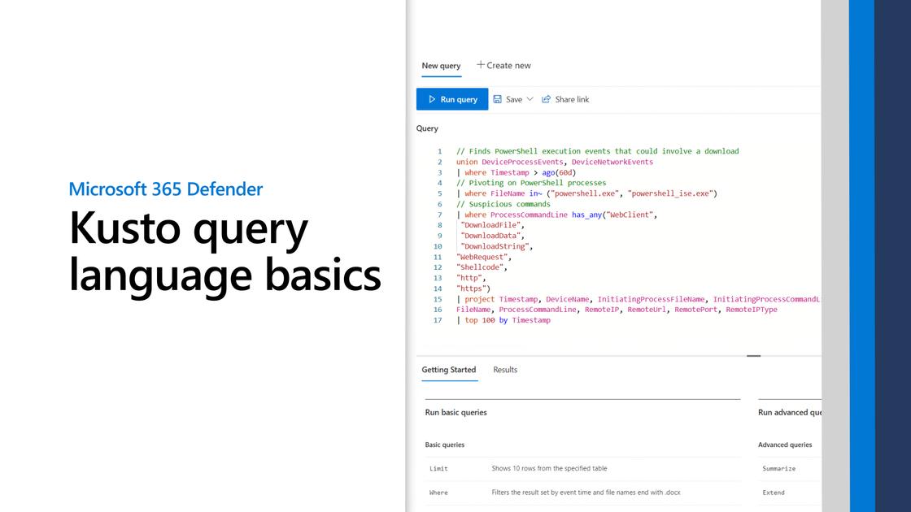

0s
fast_forward
0s
fast_rewind
Skip Ad
play_arrow
0:00
volume_up
fullscreen
more_vert
closed_caption_disabled
Captions
Off
settings
Resolution
Auto
language
Language
picture_in_picture_alt
Picture-in-Picture
Off
cast
Cast...
Off
slow_motion_video
Playback speed
0x
control_camera
Recenter
3d_rotation
Toggle stereoscopic
cast
Cast...
arrow_back
Captions
Off
done
arrow_back
Resolution
Auto
done
arrow_back
Language
arrow_back
Playback speed
0.5x
0.75x
1x
1.25x
1.5x
1.75x
2x

Play video
Play KQL Basics